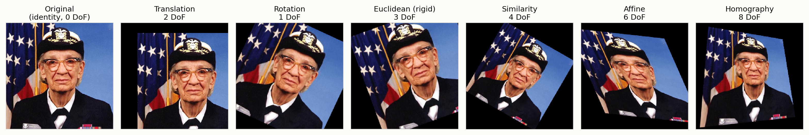
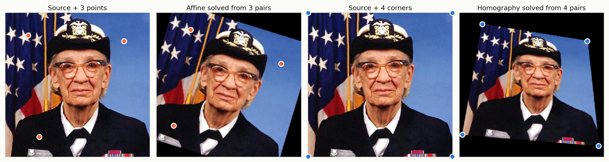
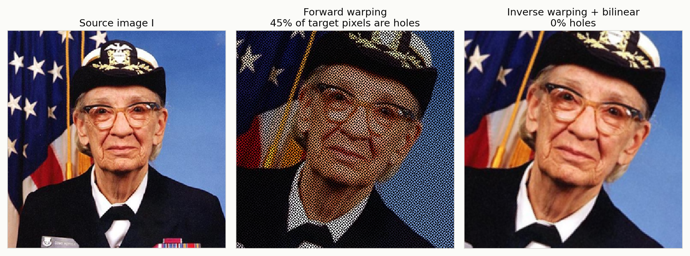
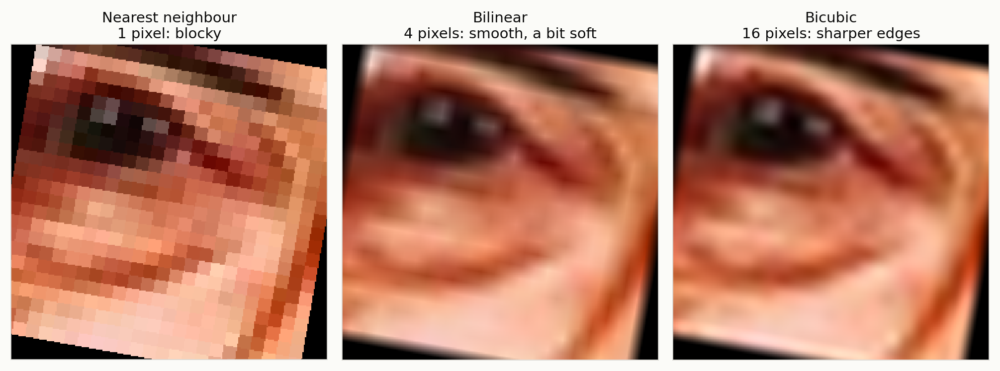
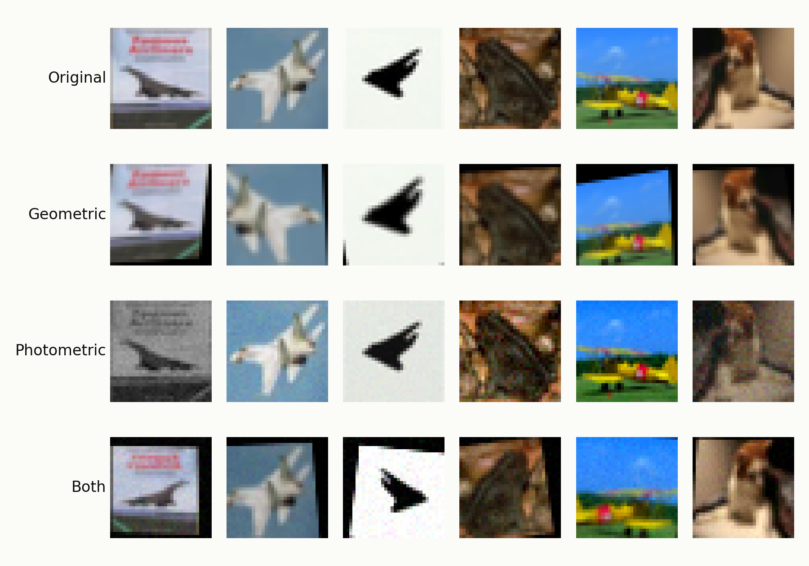
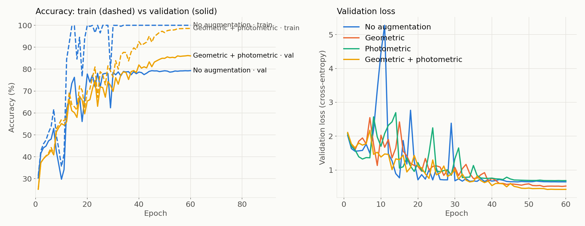
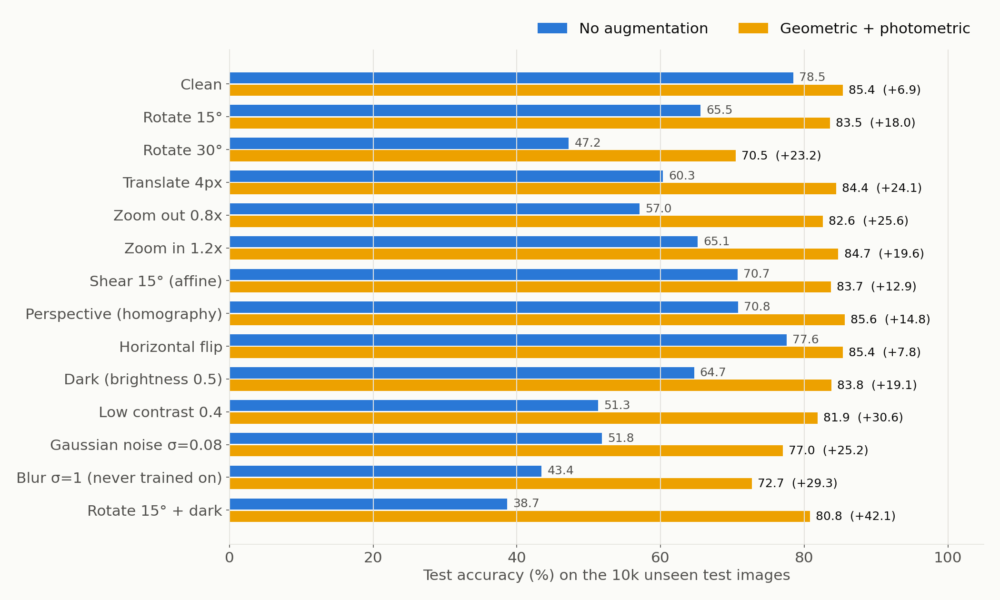

Impact of Data Augmentation on CNN Performance and Robustness
Poore project ki wazahat: Roman Urdu mein · Viva / technical questions ki tayyari
| Student | CMS |
|---|
| Sohaib Aamir | 538108 |
| Abdul Rafeh | 450126 |
| Mahmoob Ul Hassan | 624084 |
CS867 Computer Vision · Fall 2026
Submitted to: Dr Jameel Malik, Associate Professor, SEECS
Fehrist (Contents)
- Project ka maqsad: ye topic kahan se aaya
- Bunyadi concepts (augmentation, overfitting, robustness)
- Theory: transformation hierarchy aur homogeneous coordinates
- Point pairs se matrix solve karna (affine least squares, homography DLT)
- Forward vs inverse warping
- Interpolation: nearest, bilinear, bicubic
- Hamari augmentation pipeline (geometric + photometric)
- Experiment ka design (data, model, training)
- Results: overfitting, accuracy, robustness, ablations
- State-of-the-art benchmark (AutoAugment, RandAugment, AugMix, CIFAR-10-C…)
- Code structure: kaun si file kya karti hai
- Limitations aur imaandar caveats
- Viva question bank: sawal + jawab (Roman Urdu)
- Glossary: zaroori terms
1. Project ka maqsad: ye topic kahan se aaya
Lecture 7 (Geometric Transformations) mein, slides 15–16 par (similarity aur affine), Sir ne kaha tha:
“Toh jo image hai na, uski na ye saari augmentation hai. … But you have to go into the details, and also try to do it on some CNN … that is going to make your inference more robust and more accurate.”
Matlab: jo 3×3 matrices hum lecture mein image ko warp karne ke liye use karte hain (translation, rotation, scale, affine, homography), wahi matrices agar training ke dauran random lagayi jayen to har image ka ek naya version ban jata hai, aur label wahi rehta hai (10° ghoomi hui billi phir bhi billi hai). Isi ko data augmentation kehte hain.
Task ke 4 hisse the, aur hum ne charon kiye:
| Requirement | Hum ne kya kiya |
|---|
| Theoretical foundation | Translation → Euclidean → similarity → affine → homography; DoF aur minimum point pairs; sab NumPy mein scratch se (src/geometry.py) |
| Mathematical mechanics | Forward vs inverse warping (forward mein 45.1% holes); nearest, bilinear, bicubic interpolation scratch se |
| CNN par implement | GPU par har image ke liye random homography + photometric jitter; ResNet-9 CNN, CIFAR-10 |
| Quantitative proof | Training curves, accuracy, validation loss, train–test gap, 13 test-time shifts, 3 seeds; phir 8 modern methods ke saath benchmark aur CIFAR-10-C |
2. Bunyadi concepts
Data augmentation
Maujooda training images ko transform kar ke nayi training images banana, aur label same rakhna. Do qisam:
- Geometric: pixel ki position badalti hai: translation, rotation, scale, shear, flip, homography. Iske liye warping + interpolation chahiye.
- Photometric: pixel ki value badalti hai, position nahi: brightness, contrast, saturation, noise, grayscale. Har output pixel sirf usi input pixel par depend karta hai, isliye warping ki zaroorat nahi.
Overfitting
Jab model training images ko ratta laga leta hai: train accuracy 100% ho jati hai lekin naye (unseen) images par accuracy kam rehti hai. Hum ise train–test gap se naapte hain = train accuracy − test accuracy. Gap jitna bara, overfitting utni zyada.
Robustness
Agar test image thodi ghoomi hui, andheri, blurry ya noisy ho (distribution shift), to model ki accuracy kitni girti hai? Robust model ki accuracy kam girti hai.
Ye kyun kaam karta hai? (intuition)
Augmentation model ko batata hai ke “ye cheezein label par asar nahi dalti”: object thora left ho, thora bara ho, thora ghooma ho, ya roshni kam ho, class wahi hai. Is tarah model asal shape/feature seekhta hai, pixel ki exact position ratta nahi lagata. Ek tarah ka regularizer hai, aur effectively dataset bara ho jata hai (60 epochs = har image ke 60 alag versions).
3. Theory: transformation hierarchy
Homogeneous coordinates kyun?
Point (x, y) ko (x, y, 1) likhte hain. Iska faida: translation bhi matrix multiplication ban jata hai (warna translation sirf addition hai), aur saari transformations ko ek doosre se multiply kar ke ek hi 3×3 matrix mein combine kar sakte hain. Homography ke liye teesra component w zaroori hai, kyunki aakhir mein x′ = X/w, y′ = Y/w karte hain.
| Transform | Matrix (top 2 rows) | DoF | Min. point pairs | Kya preserve hota hai | Augmentation |
|---|
| Translation | [1 0 tx; 0 1 ty] | 2 | 1 | Sab kuch (sirf position badli) | Random shift / crop |
| Euclidean (rigid) | [cosθ −sinθ tx; sinθ cosθ ty] | 3 | 2 | Lengths, angles | Rotate + shift |
| Similarity | [s·cosθ −s·sinθ tx; s·sinθ s·cosθ ty] | 4 | 2 | Angles, length ratios | + zoom in/out |
| Affine | [a b c; d e f] | 6 | 3 | Parallel lines parallel rehti hain | + shear, aspect, flip |
| Homography | [a b c; d e f; g h 1] | 8 | 4 | Sirf straight lines straight | Viewpoint / perspective |
Rule (Sir ka in-class sawal): har point pair (x, y) ↔ (x′, y′) se 2 equations milti hain. Isliye minimum pairs = ⌈DoF ÷ 2⌉.
• Translation: 2 DoF → 1 pair.
• Rigid: 3 DoF → 1 pair sirf 2 equations deta hai (kam hain), isliye 2 pairs chahiye (4 equations, 3 unknowns).
• Affine: 6 DoF → 3 pairs. Homography: 8 DoF → 4 pairs.
Lecture mein bhi Sir ne kaha tha: “point nahi hoga, wo actually point pair hoga.”
Homography 8 DoF kyun, 9 kyun nahi?
3×3 matrix mein 9 numbers hain, lekin homography scale tak defined hai: H aur 2H bilkul same mapping dete hain, kyunki aakhir mein w se divide kar dete hain. Isliye ek entry (h₃₃) ko 1 fix kar dete hain → 8 unknowns (a…h). Sir ne bhi kaha tha: “jo last wala 1 hai, that is defining it up to a scale.”
⎡wx′⎤ ⎡a b c⎤ ⎡x⎤
⎢wy′⎥ = ⎢d e f⎥ ⎢y⎥ x′ = (ax + by + c) / (gx + hy + 1)
⎣ w ⎦ ⎣g h 1⎦ ⎣1⎦ y′ = (dx + ey + f) / (gx + hy + 1)
g aur h ki wajah se denominator har pixel par alag hota hai → parallel lines aage ja kar mil sakti hain = perspective. Affine mein g = h = 0, denominator hamesha 1, isliye parallel lines parallel rehti hain.
Homography ka physical matlab: agar camera ka center of projection same rahe aur sirf camera ghoome (ya scene ek plane ho), to do images ka rishta ek homography se hota hai. Panorama/mosaic isi par bante hain. Augmentation mein chhoti random H = “wahi object, thore alag angle se dekha gaya”.

Hamara NumPy code: rigid, similarity, affine, homography ek hi image par (inverse warping + bilinear).
4. Point pairs se matrix solve karna
Affine: least squares (3 pairs)
Har pair se 2 rows banti hain:
x′ = a·x + b·y + c → [x y 1 0 0 0]·p = x′
y′ = d·x + e·y + f → [0 0 0 x y 1]·p = y′ p = [a b c d e f]ᵀ
3 pairs → 6×6 system A·p = b. Hum np.linalg.lstsq se solve karte hain. Agar zyada pairs hon (noise ke saath) to least squares error ko average kar deta hai. Hamara result: targets par max error ~2×10⁻¹³ px (sirf floating-point rounding).
Homography: DLT (Direct Linear Transform) + SVD (4 pairs)
x′(gx + hy + 1) = ax + by + c ko rearrange karein to har pair se 2 linear equations milti hain jo h ke 9 entries mein linear hain:
[ −x −y −1 0 0 0 x·x′ y·x′ x′ ] · h = 0
[ 0 0 0 −x −y −1 x·y′ y·y′ y′ ] · h = 0
4 pairs → 8×9 matrix A, aur A·h = 0. Trivial jawab h = 0 nahi chahiye, isliye constraint ‖h‖ = 1 lagate hain. Iska hal: A ki SVD karo, sab se chhoti singular value wala right singular vector (Vᵀ ki aakhri row) h hai. Phir h₃₃ se divide kar ke last entry 1 kar dete hain. Hamara max error: ~3.5×10⁻¹⁰ px.
Agla qadam (agar Sir poochein): real matching mein kuch pairs galat (outliers) hote hain, to RANSAC use karte hain: random 4 pairs → H → inliers gino → best H rakho.

3 pairs se affine aur 4 pairs se homography, hamare scratch solver se.
5. Forward vs inverse warping
| Forward warping | Inverse warping |
|---|
| Formula | x′ = H·x (source se target ki taraf “push”) | x = H⁻¹·x′ (target se poocho “main kahan se aaya?”, “pull”) |
| Masla | Holes: kuch target pixels ko koi value nahi milti; kuch par 2 source pixels gir jate hain (overlap) | Koi hole nahi: har target pixel ek baar visit hota hai |
| Hamara measurement | Zoom 1.35× + rotate 20° → 45.1% target pixels khaali | 0% holes |
| Use | Kam use hota hai | Har augmentation library (aur hamari pipeline) |
Holes kyun banti hain? Zoom-in mein target pixels source pixels se zyada ho jate hain; push karne se har target tak koi pixel nahi pohanchta. Aur source pixel ki nayi position fractional hoti hai; round karne par kai pixels ek hi jagah gir jate hain.
Inverse warping mein naya masla: H⁻¹·x′ aksar do pixels ke beech (fractional location) par girta hai, isliye wahan value nikalne ke liye interpolation chahiye. Aur agar location image ke bahar ho to us pixel ko black (0) bhar dete hain: yehi augmented images ke black corners hain (lecture ki ghoomi hui billi ki tarah).

Forward warping mein holes (45.1%) vs inverse warping (0%).
6. Interpolation
Inverse warping fractional location (x, y) deta hai. Wahan intensity ka andaza lagane ke teen tareeqe, teeno src/geometry.py mein scratch se:
Nearest neighbour (1 pixel)
f(x, y) = I[ round(y), round(x) ]
Sab se tez; value copy hoti hai, naye values nahi bante. Edges blocky / jagged (staircase) ho jate hain.
Bilinear (4 pixels, 2×2)
Pehle x direction mein linear interpolation (2 baar), phir y direction mein. Lecture ke Q11, Q12, Q21, Q22 wala derivation. Agar fractional parts dx, dy hon:
f = Q11·(1−dx)(1−dy) + Q21·dx·(1−dy) + Q12·(1−dx)·dy + Q22·dx·dy
Weights ka sum = 1. Smooth result, thora soft/blurry. Zyada tar libraries ka default; hamari pipeline ka default bhi yehi hai.
Bicubic (16 pixels, 4×4)
Har row ke 4 points par cubic polynomial fit, phir 4 rows ke results par ek aur cubic. Hum Keys kernel (a = −0.5) use karte hain:
w(t) = (a+2)|t|³ − (a+3)|t|² + 1 agar |t| ≤ 1
w(t) = a|t|³ − 5a|t|² + 8a|t| − 4a agar 1 < |t| < 2
w(t) = 0 warna
f(x, y) = Σᵢ Σⱼ w(x − i)·w(y − j)·I[j, i]
Sab se sharp edges; lekin negative weights ki wajah se thora overshoot/ringing ho sakta hai (isliye result clip karte hain). Sab se slow.

Same warp (24×24 crop, 10.7× zoom, 10° rotation), teen interpolators.
Hamara ablation: CNN ki training mein interpolator badalne se fark bohat chhota tha: nearest 85.9%, bilinear 85.3%, bicubic 86.4% (sirf 1.1 pts ka spread, aur single seed). Augmentation lagane ka faida (+6.9 pts) is se kahin bara hai. Wajah: 32×32 images par warps chhote hain, interpolation ka asar bara nahi hota.
7. Hamari augmentation pipeline
Geometric: har image ke liye ek random homography
H = C · P · T · R · Sh · S · F · C⁻¹
| Term | Matlab | Random range (32×32) | Lecture transform |
|---|
| C⁻¹ … C | Origin ko image ke center par le jao, aakhir mein wapis | fixed | Translation |
| F | Horizontal flip | p = 0.5 | Affine (x ko −1 se scale) |
| S | Uniform scale (zoom) | 0.85 – 1.15 | Similarity |
| Sh | Shear | ±10° | Affine |
| R | Rotation | ±15° | Euclidean |
| T | Translation | ±4 px (12.5%) | Translation |
| P | Perspective (g, h) | ±0.0008 per pixel | Homography |
- C aur C⁻¹ kyun? Rotation/scale origin (0,0) ke gird hoti hai jo image ka kona hai. Center ke gird ghumane ke liye: center ko origin par lao (C⁻¹), transform karo, wapis le jao (C).
- Order matter karta hai: matrix multiplication commutative nahi hai. Right se left apply hota hai: pehle C⁻¹, phir F, S, Sh, R, T, P, aakhir mein C.
- Perspective itna chhota kyun (0.0008)? Image center se ~16 px tak jati hai; g·x ≈ 0.0008 × 16 ≈ 0.013, yani denominator ~1.3% badalta hai: halka sa viewpoint change. Zyada karein to object bigar jata hai.
- Har image, har epoch naya H: 60 epochs = har image ke 60 alag versions.
- Apply kaise: H⁻¹ se har output pixel ka source nikalte hain, phir PyTorch ka
grid_sample interpolation karta hai (bilinear default). Ye sab GPU par batch mein hota hai, isliye tez hai. Bahar wale pixels = 0 (black).
Photometric
| Operation | Pixel rule | Range |
|---|
| Brightness | I′ = β·I | β ∈ [0.7, 1.3] |
| Contrast | I′ = α(I − μ) + μ, μ = mean gray | α ∈ [0.7, 1.3] |
| Saturation | I′ = s(I − gray) + gray | s ∈ [0.7, 1.3] |
| Sensor noise | I′ = I + σ·N(0, 1) | σ ∈ [0, 0.04] |
| Grayscale | I′ = 0.299R + 0.587G + 0.114B | p = 0.1 |
Aakhir mein values [0, 1] mein clip, phir CIFAR mean/std se normalize.

Hamari GPU pipeline ka asal output: CNN yehi images dekhta hai.
8. Experiment ka design
Data (CIFAR-10)
- CIFAR-10: 60,000 color images, 32×32, 10 classes (airplane, car, bird, cat, deer, dog, frog, horse, ship, truck).
- Fixed split (seed 1234): 5,000 validation images alag; un mein se 10,000 training images (low-data regime: yahan overfitting saaf nazar aati hai).
- Official 10,000 test images training ya tuning mein kabhi use nahi hue: sirf aakhir mein report.
Model: ResNet-9 style CNN (~6.5M parameters)
conv(3→64) → conv(64→128) → maxpool → Residual(128: 2 convs)
→ conv(128→256) → maxpool → conv(256→512) → maxpool → Residual(512: 2 convs)
→ global max pool → Linear(512→10) → × 0.125
(har conv = 3×3 Conv + BatchNorm + ReLU)
- Dropout nahi, jaan boojh kar, taake augmentation ka asar saaf dikhe (koi aur regularizer overfitting ko chupa na de).
- × 0.125 (logit scaling): ResNet-9 ka standard trick; shuru mein output chhote rehte hain aur training stable rehti hai. Iske baghair hamari training diverge ho gayi thi (loss ~40).
Training
| Setting | Value | Kyun |
|---|
| Optimizer | SGD + Nesterov momentum 0.9 | CIFAR par standard, achi generalization |
| Learning rate | One-cycle, max 0.05 | Pehle LR barhao (warm-up), phir dheere kam: tez convergence |
| Weight decay | 5×10⁻⁴ | L2 regularization (sab settings mein same) |
| Batch / epochs | 256 / 60 | Sab runs ke liye same |
| Gradient clipping | 5 | Stability |
| Precision | bf16 autocast, channels_last | RTX 4090 par speed |
| Seeds | 3 (0, 1, 2) | Mean ± std report: result luck nahi |
Compared settings: none · geometric · photometric · geometric + photometric. Sirf augmentation badli, baaki sab (model, data, optimizer, epochs) bilkul same: controlled experiment.
Train accuracy clean training images par naapi (augmented par nahi), isliye train–test gap overfitting ka imaandar measure hai.
Robustness suite: 13 test-time shifts
Trained model ko retrain kiye baghair test set par deterministic shifts laga kar evaluate kiya: Rotate 15°, Rotate 30°, Translate 4 px, Zoom out 0.8×, Zoom in 1.2×, Shear 15°, Perspective, Horizontal flip, Dark (brightness 0.5), Low contrast 0.4, Gaussian noise σ = 0.08, Blur σ = 1 (kabhi train nahi kiya), Rotate 15° + dark.
9. Results
Main table (10k training images, 3 seeds ka mean)
| Augmentation | Train acc. | Val. acc. | Val. loss | Test acc. | Train–test gap | 13 shifts mean |
|---|
| None | 100.0% | 79.3% | 0.652 | 78.5 ± 0.3% | 21.5 pts | 58.8% |
| Geometric | 98.8% | 84.6% | 0.528 | 83.6 ± 0.3% | 15.2 pts | 75.2% |
| Photometric | 100.0% | 78.9% | 0.689 | 77.9 ± 0.1% | 22.1 pts | 64.7% |
| Geometric + photometric | 98.6% | 86.0% | 0.431 | 85.4 ± 0.2% | 13.2 pts | 81.3% |
Teen headline numbers:
• Test accuracy +6.9 pts (78.5 → 85.4)
• Train–test gap −8.3 pts (21.5 → 13.2): overfitting kam
• Validation loss −34% (0.652 → 0.431)
• 13 shifts par mean accuracy +22.5 pts (58.8 → 81.3)

Training curves: baghair augmentation train acc. 100% lekin validation ~79% par ruk jati hai (ratta). Augmentation ke saath gap band hota hai.
Curves kaise parhein
- None: train accuracy jaldi 100% → model ne ratta laga liya; validation loss baad mein barhne lagta hai = classic overfitting.
- Augmented: train accuracy thori kam (98.6%) kyunki task mushkil ho gaya; lekin validation/test zyada. Kam train accuracy yahan achi baat hai.
Robustness

13 shifts par accuracy, har augmentation setting ke liye.
| Augmentation | Clean | Geometric shifts (7) | Photometric shifts (3) | Blur (unseen) | Rotate + dark |
|---|
| None | 78.5 | 64.3 | 55.9 | 43.4 | 38.7 |
| Geometric | 83.6 | 82.1 | 61.1 | 66.7 | 70.7 |
| Photometric | 77.9 | 63.1 | 73.0 | 56.9 | 59.8 |
| Both | 85.4 | 82.6 | 80.9 | 72.7 | 80.8 |
- Geometric augmentation → geometric robustness (64.3 → 82.1).
- Photometric augmentation → lighting/noise robustness (55.9 → 73.0).
- Dono milein to dono milti hain, aur combined shift (rotate + dark) 38.7 → 80.8 (+42.1).
- Blur kabhi train nahi kiya, phir bhi 43.4 → 72.7 (+29.3): model ne zyada general features seekhe. Ye sab se strong evidence hai ke faida sirf “jo dekha wahi seekha” nahi.
Photometric akele ne clean accuracy kyun nahi barhayi?
CIFAR-10 test images ki lighting training jaisi hi hai, isliye clean test par photometric ka faida nahi (77.9 vs 78.5, almost same). Overfitting ki asal wajah position/shape ka ratta hai jo geometric hi todta hai. Lekin photometric ne robustness barhayi (photometric shifts 55.9 → 73.0). Isliye dono saath best hain.
Ablations
| Training images | No augmentation | Geo + photo | Faida |
|---|
| 10,000 | 78.5 | 85.4 | +6.9 |
| 45,000 | 87.7 | 92.4 | +4.7 |
Data zyada ho to bhi augmentation faida deta hai (+4.7). Augmented 10k (85.4%) taqreeban utna achha hai jitna 4.5× zyada asli data (87.7%).
10. State-of-the-art benchmark
Sawal: kya hamara kaam modern research ke level par hai? Is liye hum ne poora CIFAR-10 (45k train) par 9 methods ko bilkul same model/optimizer/epochs ke saath train kiya (2 seeds each, 18 runs), aur standard robustness benchmark CIFAR-10-C par test kiya.
Methods (har ek kya karta hai)
| Method | Saal | Idea (Roman Urdu) |
|---|
| Crop + flip | 2016 | 4 px padding, random 32×32 crop, horizontal flip. Standard baseline. |
| Ours | 2026 | Random homography + photometric jitter (upar wali pipeline). |
| AutoAugment | 2019 | Reinforcement learning se 25 sub-policies dhoondi gayin (har sub-policy = 2 operations + probability + magnitude). Search bohat mehnga tha. |
| RandAugment | 2020 | Search khatam: har image par N = 2 random operations, ek global magnitude M = 9. Sirf 2 hyperparameters. |
| TrivialAugment | 2021 | Har image par sirf ek random operation, random strength. Zero hyperparameters. |
| AugMix | 2020 | 3 random augmentation chains ko mix kar ke image banao; original + 2 AugMix views par Jensen–Shannon consistency loss (model teeno par same prediction de). Robustness ke liye bana. CIFAR-10-C se milte-julte operations (noise, blur waghera) exclude karta hai. |
| Mixup | 2018 | Do images ko blend karo (λ·x₁ + (1−λ)·x₂), labels bhi usi ratio mein mix. |
| CutMix | 2019 | Ek image ka rectangle patch doosri par paste; label area ke ratio se. |
| Combined | – | TrivialAugment + Random Erasing + CutMix/Mixup: modern training recipe. |
Metrics
- Clean test accuracy (+ flip TTA: test image aur uske flip ki predictions ka average).
- ECE (Expected Calibration Error): predictions ko confidence ke 15 bins mein baanto; har bin mein |average confidence − accuracy|, bin size se weighted average. Kam ECE = model ka confidence qabil-e-aitbaar hai (90% confident ho to ~90% sahi ho).
- CIFAR-10-C (Hendrycks & Dietterich, ICLR 2019): test set par 15 corruptions × 5 severities = 750,000 images. Families: noise (gaussian, shot, impulse), blur (defocus, glass, motion, zoom), weather (snow, frost, fog, brightness), digital (contrast, elastic, pixelate, JPEG).
- mCA = mean corruption accuracy (75 combinations ka average). mCE = 100 − mCA (unnormalised, jaise AugMix paper CIFAR ke liye report karta hai).
Results (2 seeds ka mean)
| Method | Test acc. | + flip TTA | ECE ↓ | Our 13 shifts | CIFAR-10-C mCA |
|---|
| Crop + flip | 93.85 | 94.25 | 1.60 | 76.6 | 73.0 |
| Ours | 93.16 | 93.61 | 1.28 | 90.1 | 86.0 (2nd) |
| AutoAugment | 94.66 | 95.05 | 0.85 | 84.2 | 81.0 |
| RandAugment | 94.63 | 94.91 | 0.99 | 83.0 | 81.1 |
| TrivialAugment | 94.41 | 94.90 | 0.59 | 86.8 | 83.3 |
| AugMix | 94.28 | 94.78 | 0.50 | 87.8 | 87.0 |
| Mixup | 93.55 | 94.09 | 15.80 | 78.7 | 76.6 |
| CutMix | 94.06 | 94.56 | 9.77 | 74.7 | 70.5 |
| Combined | 92.94 | 93.33 | 15.87 | 84.2 | 81.3 |
Do seeds ka fark har method mein 0.25 pts se kam: numbers stable hain.
CIFAR-10-C family-wise (accuracy %)
| Method | Noise | Blur | Weather | Digital | Severity 1 | Severity 5 |
|---|
| Crop + flip | 56.0 | 70.2 | 83.7 | 77.7 | 85.6 | 56.6 |
| Ours | 84.1 | 85.4 | 89.0 | 84.8 | 90.8 | 77.5 |
| AugMix | 81.1 | 87.7 | 89.5 | 88.3 | 91.9 | 79.1 |
| TrivialAugment | 70.1 | 85.3 | 88.8 | 85.8 | 91.1 | 72.4 |
| AutoAugment | 67.3 | 80.4 | 88.2 | 84.5 | 89.8 | 69.0 |
Interpretation: kya kehna hai
- Clean accuracy: AutoAugment/RandAugment best (94.7%). Hamara 93.2% (8th of 9): ~1.5 pts kam.
- Robustness (CIFAR-10-C): hamara 86.0% → 2nd of 9, sirf AugMix (87.0%) se peeche; AutoAugment (81.0), RandAugment (81.1), TrivialAugment (83.3) se aage; baseline se +13 pts.
- Hamare 13 shifts par: hum 1st (90.1%), lekin ye test hamare haq mein biased hai (neeche dekhein).
- Calibration: AugMix/TrivialAugment best. Mixup/CutMix ka ECE bohat zyada (10–16%): soft (mixed) labels par train hone se model under-confident ho jata hai. Ye papers mein bhi reported hai, bug nahi.
- Trade-off: hamari strong geometric warps (black corners, perspective) clean accuracy thori kam karti hain lekin robustness bohat barhati hain.
Imaandar caveats (Sir zaroor pooch sakte hain):
1. Noise overlap: hum training mein Gaussian noise (σ ≤ 0.04) lagate hain, aur CIFAR-10-C ki noise family bhi noise hai. Isliye noise par hamara 84.1% kuch had tak “dekha hua” hai. AugMix jaan boojh kar noise operations exclude karta hai. Agar noise family nikal dein (baqi 12 corruptions): AugMix 88.5, TrivialAugment 86.6, ours 86.4, AutoAugment 84.4, baseline 77.2. Yani tab bhi hum top-3 mein hain aur TrivialAugment ke barabar.
2. Hamare 13 shifts (rotation, zoom, perspective…) wahi transformations hain jin par hum train karte hain, isliye un par 1st aana expected hai. Isi liye CIFAR-10-C fair test hai.
3. Contrast weakness: CIFAR-10-C contrast par hum ~80% vs AutoAugment ~91%; hamari contrast range (0.7–1.3) bohat halki hai.
11. Code structure
| File | Kya karti hai |
|---|
src/geometry.py | Sirf NumPy: translation, rotation, euclidean, similarity, affine, homography matrices; solve_affine (least squares), solve_homography (DLT + SVD); forward_warp (holes mask ke saath), inverse_warp; interp_nearest, interp_bilinear, interp_bicubic (Keys kernel) |
src/demo_transforms.py | Theory figures banata hai (sirf geometry.py se), aur numbers: holes 45.1%, solver errors |
src/augment.py | GPU augmentation: random_homographies (H = C·P·T·R·Sh·S·F·C⁻¹), inverse_warp (grid_sample), random_photometric, Augmenter class, test shifts ke liye fixed_homography, gaussian_blur |
src/train.py | CNN (ResNet-9), data split, training loop, curves, 13-shift robustness; result JSON mein |
src/analyze.py | Sab runs ko jama kar ke table + figures |
src/train_sota.py | 9 methods ka benchmark, ECE, flip TTA, checkpoints |
src/eval_cifar10c.py | Har checkpoint ko CIFAR-10-C (750k images) par test |
src/analyze_sota.py | Benchmark summary table |
run_all.sh, run_sota.sh | Saare experiments ek command se dobara chalane ke liye |
Inverse warp ka core (slide 33 wala code)
def inverse_warp(x, H, mode="bilinear"):
B, _, h, w = x.shape
ys, xs = meshgrid(arange(h), arange(w))
dst = stack([xs, ys, ones]) # har output pixel (homogeneous)
src = inv(H) @ dst # ye kahan se aaya?
sx, sy = src[0]/src[2], src[1]/src[2] # w se divide (homography)
grid = normalise(sx, sy) # [-1, 1] range mein
return grid_sample(x, grid, mode) # interpolation
grid_sample ko normalized coordinates chahiye: −1 = left/top edge, +1 = right/bottom. Hum align_corners=True use karte hain (−1 aur +1 corner pixels ke centers hain). Grid ke bahar wale points zero (black) ho jate hain.
12. Limitations
- Sirf ek dataset (CIFAR-10), ek architecture (ResNet-9), 60 epochs. Papers WideResNet par 200 epochs train karte hain jahan strong policies ka faida zyada hota hai.
- Hamare 13 shifts training transforms se overlap karte hain → CIFAR-10-C fair test hai.
- Label badalne wale transforms: digits/text mein 6 ↔ 9 (rotation) ya flip label badal sakta hai; ranges task ke hisaab se rakhni chahiye.
- Interpolation ablation single seed par hai.
- Benchmark mein 2 seeds; ideal 3–5.
- Future: ImageNet-C, ViT, learnable warp ranges (spatial transformer / adversarial augmentation), test-time augmentation.
13. Viva question bank (sawal + jawab)
Jawab chhote rakhein, pehle seedha jawab, phir ek number ya example.
A. Theory
Q1. Data augmentation kya hai aur label kyun nahi badalta?
Training images ko transform kar ke nayi images banana. Hum sirf woh transforms lagate hain jo class nahi badalte: chhoti rotation, shift, zoom, lighting. 15° ghooma hua jahaz phir bhi jahaz hai. Agar transform label badal de (jaise digit 6 ko 180° ghumana) to wo galat augmentation hai.
Q2. Homogeneous coordinates kyun use karte hain?
Taake translation bhi matrix multiplication ban jaye aur saari transformations ek 3×3 matrix mein multiply ho sakein. Homography ke liye teesra component w zaroori hai: x′ = X/w.
Q3. Har transformation ki DoF aur kitne point pairs chahiye?
Translation 2 DoF / 1 pair; rigid 3 / 2; similarity 4 / 2; affine 6 / 3; homography 8 / 4. Har pair 2 equations deta hai, isliye pairs = ⌈DoF/2⌉.
Q4. Rigid mein 3 DoF hain, to 1.5 pairs kaafi kyun nahi? 2 kyun?
Aadha pair nahi hota. 1 pair = 2 equations, 3 unknowns ke liye kam. 2 pairs = 4 equations (overdetermined), least squares se solve.
Q5. Homography mein 9 entries hain, DoF 8 kyun?
Homography scale tak defined hai: H aur kH same mapping dete hain kyunki w se divide karte hain. Isliye h₃₃ = 1 fix → 8 unknowns.
Q6. Affine aur homography mein farq?
Affine ki last row [0 0 1] hai → parallel lines parallel rehti hain, square parallelogram banta hai. Homography mein g, h non-zero → denominator pixel ke saath badalta hai → parallel lines mil sakti hain (perspective), square koi bhi quadrilateral ban sakta hai.
Q7. Similarity aur Euclidean mein farq?
Euclidean = rotation + translation (size same). Similarity = + uniform scale (1 extra DoF). Dono angles preserve karte hain.
Q8. DLT kaise kaam karta hai? SVD kyun?
Har pair se 2 linear equations A·h = 0 banti hain (4 pairs → 8×9). h = 0 trivial hai, isliye ‖h‖ = 1 constraint. ‖Ah‖ minimum karne wala unit vector A ki sab se chhoti singular value ka right singular vector hai (V ka aakhri column). Phir h₃₃ se divide.
Q9. Zyada point pairs hon (noisy) to?
Least squares (ya SVD) sab ko average kar deta hai. Outliers hon to RANSAC: random minimal set → model → inliers count → best model.
Q10. Homography physically kab valid hai?
Jab do images same center of projection se li gayi hon (camera sirf ghooma), ya scene ek plane ho. Isi se panoramas bante hain. Lecture ka last hissa yehi tha: ek projective plane se doosre tak mapping.
Q11. Center ke gird rotation ke liye C·R·C⁻¹ kyun?
Rotation matrix origin (0,0) ke gird ghumata hai, jo image ka kona hai. Pehle center ko origin par lao (C⁻¹), ghumao, wapis le jao (C).
Q12. Matrices ka order matter karta hai?
Haan, matrix multiplication commutative nahi. Pehle rotate phir translate ≠ pehle translate phir rotate. Hum right se left apply karte hain: C⁻¹ pehle, C aakhir mein.
B. Warping aur interpolation
Q13. Forward warping mein holes kyun aate hain?
Source pixel ko target par “push” karte hain; nayi position fractional hoti hai aur round karni parti hai. Zoom-in mein target pixels source se zyada hote hain, to kai targets ko kuch nahi milta. Hamare demo mein zoom 1.35× + rotate 20° par 45.1% holes.
Q14. Inverse warping holes kaise khatam karta hai?
Har target pixel x′ ke liye x = H⁻¹·x′ nikalte hain aur wahan interpolate karte hain. Har target exactly ek baar visit hota hai: 0% holes. Source image ke bahar ho to black (0).
Q15. Bilinear interpolation derive karein.
4 neighbours Q11, Q21, Q12, Q22; fractional parts dx, dy. Pehle x mein: R1 = (1−dx)Q11 + dx·Q21, R2 = (1−dx)Q12 + dx·Q22. Phir y mein: f = (1−dy)R1 + dy·R2. Weights ka sum 1.
Q16. Bicubic mein 16 pixels kyun? Kernel kaun sa?
Cubic fit ko har direction mein 4 points chahiye: 4×4 = 16. Keys cubic convolution kernel, a = −0.5. Negative lobes ki wajah se sharp edges lekin overshoot ho sakta hai, isliye clip karte hain.
Q17. Kaun sa interpolation best hai? CNN par fark?
Visual quality: bicubic > bilinear > nearest. CNN ablation: nearest 85.9, bilinear 85.3, bicubic 86.4: sirf 1.1 pts ka spread, single seed. 32×32 par chhote warps mein fark kam hai; augmentation ka hona (+6.9) interpolator ki choice se kahin zyada important hai. Bilinear speed/quality ka acha balance hai, isliye default.
Q18. Augmented images mein black corners kyun hain? Kya ye nuqsan dete hain?
Inverse warp mein source image ke bahar wale pixels = 0. Ye ek kism ka random occlusion hai; model ko seekhna parta hai ke borders important nahi. Lekin ye clean test images se mismatch bhi hai, aur hamari clean accuracy SOTA se thori kam hone ki ek wajah ho sakti hai.
C. Implementation
Q19. Augmentation GPU par kyun?
CPU par per-image warping slow hai. Hum poore batch ke 256 random H ek saath bana kar grid_sample se GPU par warp karte hain: tez, aur training GPU ka intezar nahi karti.
Q20. grid_sample kya karta hai?
Har output pixel ke liye ek (x, y) source location leta hai (normalized −1…1) aur wahan input ko interpolate karta hai (nearest/bilinear/bicubic). Ye exactly inverse warping hai. Hum align_corners=True use karte hain.
Q21. Perspective parameter 0.0008 itna chhota kyun?
Image center se ~16 px; g·x ≈ 0.013, yani denominator ~1.3% badalta hai: halka viewpoint change. Zyada karein to 32×32 object bigar kar pehchan mein nahi aata (label noise).
Q22. Har epoch nayi augmentation kyun? Ek dafa augmented dataset bana lein to?
Online (har epoch naya random H) se model har image ke 60 alag versions dekhta hai; fixed offline copies kuch hi versions deti hain aur model unhein bhi ratta laga sakta hai.
Q23. Contrast formula mein μ kyun?
α(I − μ) + μ: mean gray ke gird stretch/compress karte hain, taake average brightness same rahe aur sirf contrast badle.
D. Training aur experiment design
Q24. ResNet-9 kyun? Architecture batayein.
CIFAR par tez aur strong (~94% 45k par). 3×3 conv–BN–ReLU blocks, 3 max-pools, 2 residual blocks, global max pool, linear 512→10. ~6.5M parameters.
Q25. Dropout kyun nahi?
Jaan boojh kar: hum sirf augmentation ka asar dekhna chahte the. Dropout bhi overfitting kam karta hai aur asar ko chupa deta.
Q26. Logits ko 0.125 se multiply kyun?
ResNet-9 ka standard trick: shuru mein logits chhote, softmax saturate nahi hota, training stable. Iske baghair aur gradient clipping ke baghair hamari training diverge hui thi (loss ~40).
Q27. One-cycle LR kya hai?
LR pehle 20% steps mein barhta hai (warm-up), phir aahista zero ke qareeb aata hai. Kam epochs mein tez aur achi convergence.
Q28. Sirf 10k images kyun, poore 50k kyun nahi?
Low-data regime mein overfitting saaf dikhti hai, aur augmentation ka asar wahan sab se zyada hota hai. Hum ne 45k par bhi check kiya: faida +4.7 pts, phir bhi hai.
Q29. Validation aur test alag kyun? Test leakage?
Validation (5k) curves aur decisions ke liye; official test set (10k) training ya tuning mein kabhi use nahi hua, sirf aakhir mein report. Split fixed seed 1234 se, sab runs ke liye same.
Q30. 3 seeds kyun?
Taake result luck na ho. Std ~0.1–0.3 pts hai, aur faida 6.9 pts: noise se kahin bara.
Q31. Train accuracy augmented images par naapi ya clean par?
Clean training images par. Isliye train–test gap overfitting ka sahi measure hai.
Q32. Augmented model ki train accuracy kam kyun hai? Ye bura nahi?
Nahi, achha hai: model ratta nahi laga raha. Train 98.6% (100% se kam) lekin test 85.4% (78.5 se zyada). Overfitting kam = gap kam.
E. Results
Q33. Sab se important result kya hai?
Geometric + photometric: test 78.5 → 85.4 (+6.9), gap 21.5 → 13.2, val loss −34%, 13 shifts par 58.8 → 81.3.
Q34. Photometric akele kyun kaam nahi aaya?
Clean CIFAR test ki lighting training jaisi hai, to clean accuracy par faida nahi (77.9 vs 78.5). Lekin lighting/noise shifts par 55.9 → 73.0. Har augmentation woh invariance deti hai jo woh simulate karti hai.
Q35. Kya test shifts par train karna cheating nahi?
Partly sahi sawal hai, isliye: (1) blur kabhi train nahi kiya, phir bhi +29.3 pts; (2) humne standard CIFAR-10-C par bhi test kiya, jo kisi ne design nahi kiya hamare liye.
Q36. Augmentation vs zyada data?
Augmented 10k = 85.4%, plain 45k = 87.7%. Augmentation “free data” ki tarah kaam karta hai, lekin asli data ka mukammal mutabadil nahi. Dono saath best: 45k + aug = 92.4%.
F. State of the art
Q37. Kya aapka project state of the art hai?
Hum ne 8 modern methods ke saath same setup mein compare kiya. Robustness (CIFAR-10-C) mein hum 2nd of 9 hain (86.0%), AutoAugment/RandAugment/TrivialAugment se aage, sirf AugMix (87.0%) se peeche. Clean accuracy mein ~1.5 pts peeche hain (93.2 vs 94.7). Noise overlap ka caveat bhi hai (Q41).
Q38. AutoAugment, RandAugment, TrivialAugment mein farq?
AutoAugment: RL se policy search (mehnga). RandAugment: search khatam, N ops at magnitude M. TrivialAugment: ek random op, random strength, koi hyperparameter nahi. Teeno ka clean accuracy almost same (94.4–94.7).
Q39. AugMix ka JSD loss kya hai?
Ek image ke 3 versions (clean + 2 AugMix) par model ki predictions p₀, p₁, p₂. Jensen–Shannon divergence unhein ek doosre ke qareeb rakhta hai (consistency). Loss = cross-entropy + 12 × JSD. Isi liye AugMix 3 forward passes karta hai aur slow hai (~15 min/run vs ~3–4).
Q40. Mixup/CutMix ka ECE itna zyada kyun?
Soft labels (jaise 0.6 cat + 0.4 dog) par train hote hain, to model hamesha thora kam confident rehta hai: accuracy zyada lekin confidence kam = under-confidence = high ECE. Ye literature mein bhi reported hai.
Q41. Noise corruptions par aap itne ache kyun hain?
Imaandari se: hamari photometric pipeline Gaussian noise (σ ≤ 0.04) lagati hai, jo CIFAR-10-C ki noise family se milti hai. Noise family nikal dein to: AugMix 88.5, TrivialAugment 86.6, hum 86.4: phir bhi top-3, aur baseline (77.2) se +9.
Q42. Aapki clean accuracy SOTA se kam kyun?
Strong geometric warps (perspective, black corners) clean test images se mismatch banati hain; ranges tune nahi kiye; aur hum random crop use nahi karte. Ye ek trade-off hai: thori clean accuracy ke badle bohat zyada robustness.
Q43. Contrast par kamzor kyun?
Hamari contrast range 0.7–1.3 hai; CIFAR-10-C ki contrast corruption bohat shadeed hai. AutoAugment/TrivialAugment mein strong contrast/autocontrast operations hain. Fix: contrast range barhana.
Q44. mCE kya hai?
Mean corruption error = 100 − mCA (unnormalised, CIFAR ke liye AugMix paper jaisa). ImageNet-C par AlexNet se normalize karte hain, CIFAR par nahi.
Q45. Flip TTA kya hai?
Test-time augmentation: test image aur uske horizontal flip dono par predict karke probabilities average. Sab methods ko ~0.3–0.5 pts deta hai.
G. General
Q46. Augmentation kab nuqsan karta hai?
Jab label badal de (6 ↔ 9, text flip), ya itna strong ho ke object pehchan mein na aaye. Ranges task ke hisaab se chunni chahiye.
Q47. Homography augmentation research mein kahan use hota hai?
SuperPoint ki homographic adaptation (self-supervised keypoints), image stitching/panoramas, aur document/scene viewpoint robustness.
Q48. Agar dobara karein to kya behtar karenge?
Contrast range barhayein, noise overlap hata kar CIFAR-10-C fair rakhein, random crop add karein, zyada seeds/epochs, WideResNet/ViT, ImageNet-C, aur learnable warp ranges.
Q49. Kya aap ne libraries use ki ya khud likha?
Theory (matrices, solvers, forward/inverse warp, teeno interpolations) NumPy mein khud likha. CNN pipeline mein khud ka random homography generator; interpolation PyTorch ka grid_sample (wahi teen modes). SOTA methods torchvision ki reference implementations hain, taake comparison fair rahe.
Q50. Results reproduce kaise karein?
bash run_all.sh (main study, ~1 h RTX 4090) aur bash run_sota.sh (benchmark, ~1.5 h). Har run ka JSON results/ mein hai; deck bhi in files se automatically banta hai.
14. Glossary
| Term | Matlab |
|---|
| DoF | Degrees of freedom: matrix ke independent unknowns |
| Point pair / correspondence | Ek point (x, y) aur doosri image mein uska match (x′, y′) |
| DLT | Direct Linear Transform: homography ko linear system A·h = 0 bana kar SVD se solve karna |
| SVD | Singular value decomposition: A = UΣVᵀ |
| Warping | Image ke pixels ko transformation ke mutabiq nayi jagah le jana |
| Interpolation | Fractional location par intensity ka andaza |
| Overfitting | Training data ka ratta; unseen data par kharab |
| Train–test gap | Train accuracy − test accuracy |
| Validation loss | Held-out data par cross-entropy loss |
| Epoch | Poore training set par ek pass |
| Seed | Random number generator ki starting value (repeatability) |
| Distribution shift | Test data training data se mukhtalif ho (rotation, dark, blur…) |
| Ablation | Ek cheez badal kar uska asar alag se naapna |
| ECE | Expected calibration error: confidence vs accuracy ka farq |
| mCA / mCE | CIFAR-10-C par mean corruption accuracy / error |
| TTA | Test-time augmentation |
| JSD | Jensen–Shannon divergence (AugMix ka consistency loss) |
| Logit | Softmax se pehle model ka raw output |
| bf16 | 16-bit floating point format: tez training |